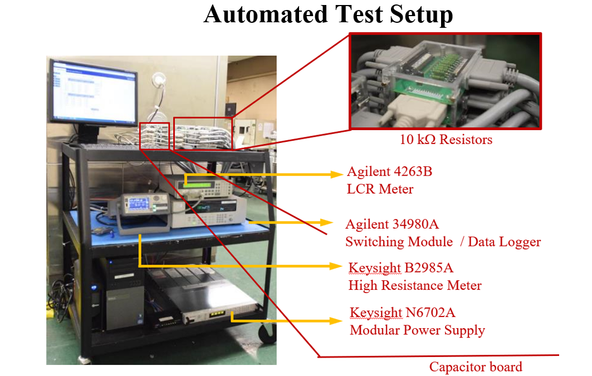
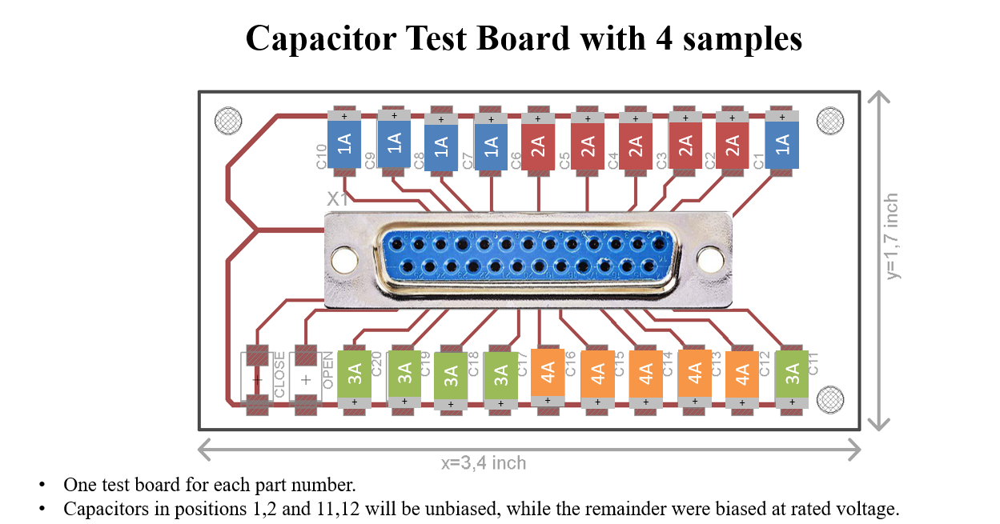
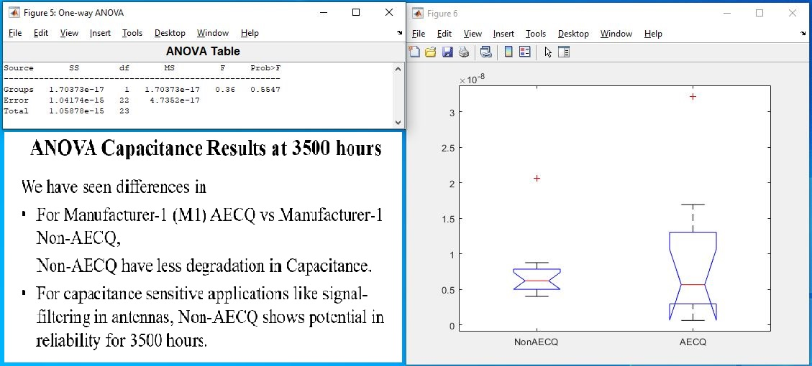

Project Overview
Conducted HALT testing for 3500 hours to evaluate the reliability benefits and differences between AEC‑Q qualified and commercial MLCCs. Devices were sourced from multiple lots and manufacturers to ensure representative sampling and to assess cross‑vendor variability.
Standard‑Based Procedures & Test Bench
- Developed a standard‑aligned test procedure with clear acceptance criteria and failure definitions.
- Designed testing circuits and custom high‑temperature connectors using ribbon cables for reliable operation at 125 °C.
- Built a LabVIEW application to orchestrate stress profiles and collect synchronized electrical data during HALT at 2× Vrated.
Measurement Campaign
- Recorded electrical characteristics throughout HALT for trend analysis and threshold events.
- Captured lot and manufacturer attributes to enable grouped comparisons.
- Applied optical microscopy on selected units to correlate physical defects with electrical behavior.
Analysis Methods
- ANOVA to evaluate differences between qualified vs. commercial parts and among manufacturers/lots.
- Time‑series analysis of electrical parameters under combined stress (temperature × voltage).
- Defect classification from microscopy to support root‑cause hypotheses.
- Conducted reliability data analysis and process capability analysis on loose parts to articulate differences.
Key Questions Addressed
- Do AEC‑Q200 qualified MLCCs exhibit measurable reliability differences vs. commercial parts under HALT?
- How do manufacturer and lot variations influence observed behavior?
- Which failure modes or defect signatures align with electrical degradation?
Deliverables & Impact
- Standardized protocol, automated test scripts, and reusable fixtures/connectors.
- Comparative dataset enabling evidence‑based component selection across vendors.
- Decision support for parts qualification in automotive and ripple‑rich environments.
- Presented weekly updates to sponsor and shared findings at the CALCE Reliability Symposium on March 27, 2024.
Test Matrix
| Status | Manufacturer | Lot | Stress |
|---|---|---|---|
| Commercial | M1 | 1A | 125 °C, 2× Vr |
| AEC-Q200 | M1 | 2A | 125 °C, 2× Vr |
| AEC-Q200 | M2 | 3A | 125 °C, 2× Vr |
| Commercial | M2 | 4A | 125 °C, 2× Vr |
Each Test Board has 10 Commercial parts and 10 AECQ parts and a total of 100 parts are tested.
Project Gallery
LabVIEW automation & fixtures

High‑T Test Boards

ANOVA Results for Capacitance